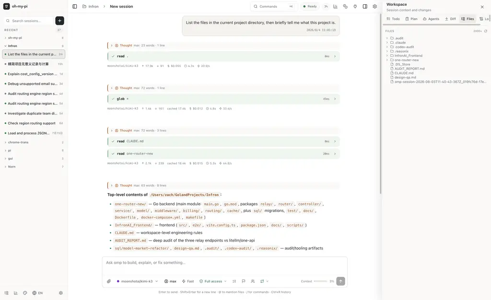
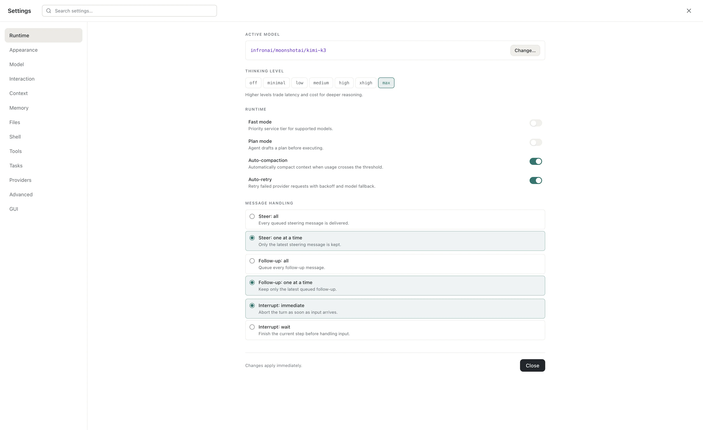
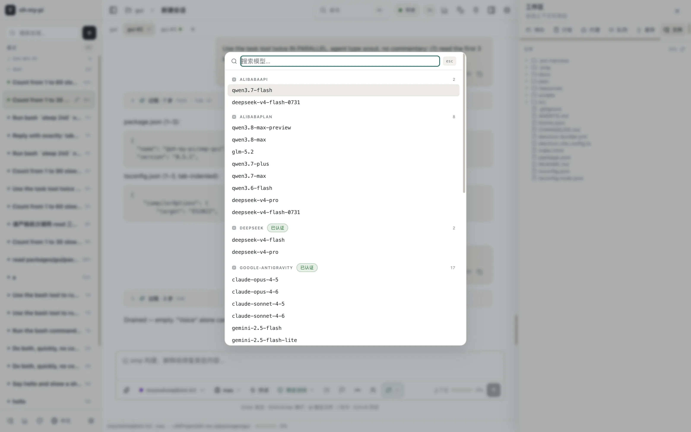
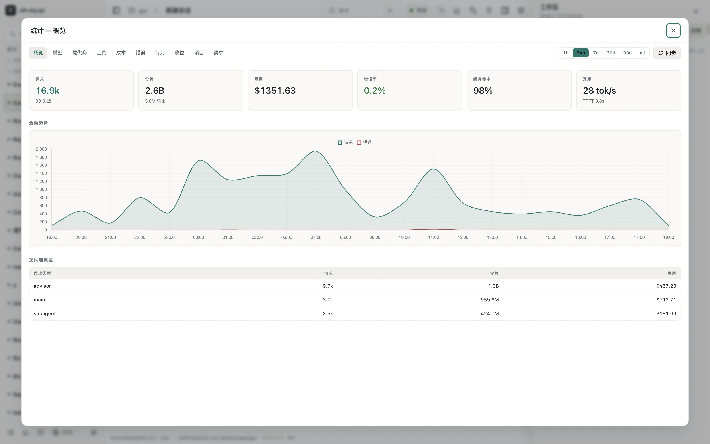
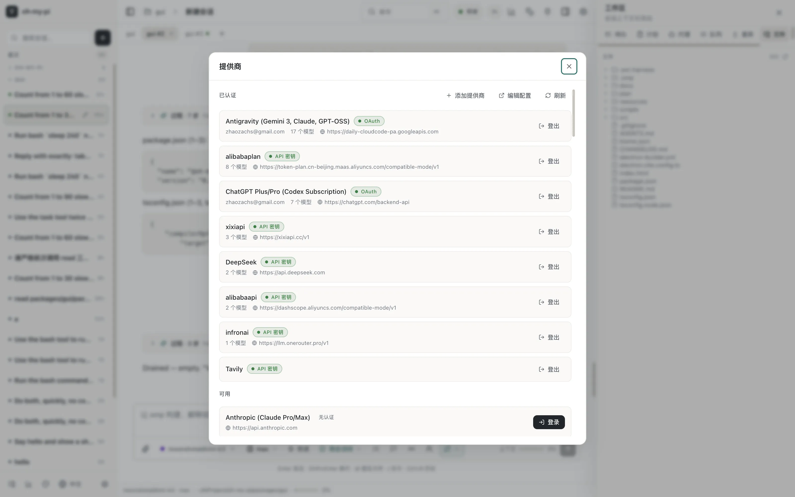
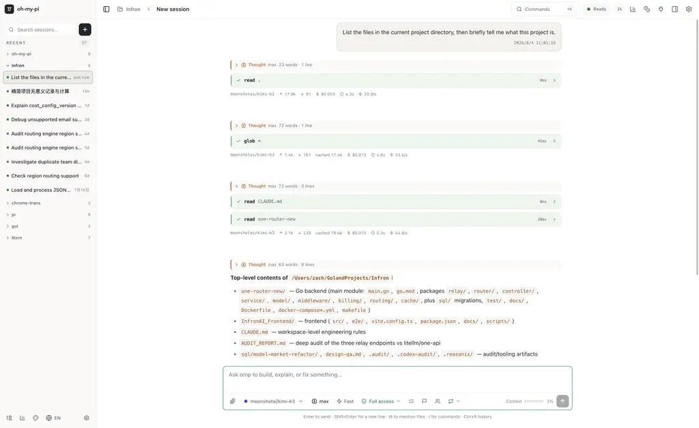

Gallery
See it in action






A fast Electron GUI for the omp coding agent. Every slash command as a menu, full-fidelity rendering, and true parallel sessions — with the agent bundled, no install required.

Features
The agent runs as a bundled sidecar over a typed NDJSON RPC bridge — fast, isolated, self-contained.
Up to 10 windows, each with its own independent agent sidecar. Switch or create sessions in one window without ever disturbing a session running in another.
Slash commands become grouped, searchable menus. The Command Palette (⌘K) gives fuzzy access to everything — sub-menus, prompts, toggles, all real RPC.
Streaming text, collapsible thinking blocks, live tool cards with real diffs, KaTeX math, mermaid diagrams, syntax-highlighted code — token by token.
Sign in with OAuth or API keys, add third-party providers, edit models.json, and see auth status at a glance.
A full stats dashboard — requests, tokens, cost, cache-hit, speed, errors, per-agent breakdown — with time ranges and charts.
Todo, Plan, Subagents, Diff, Files, and Logs in a collapsible side panel, kept in sync with the agent in real time.
Parallel sessions
Each window owns its own independent sidecar process. Open a session in a new window and it keeps running while you switch, create, or close sessions anywhere else.
Gallery





Download
The bundled agent sidecar means no separate omp / bun / Node install. Unsigned build — first launch: right-click → Open.